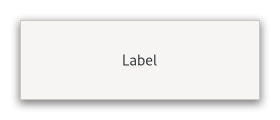

Gtk.Label¶
Example¶
- Subclasses:
None
Methods¶
- Inherited:
Gtk.Widget (181), GObject.Object (37), Gtk.Accessible (16), Gtk.Buildable (1), Gtk.AccessibleText (3)
- Structs:
class |
|
class |
|
|
|
|
|
|
|
|
|
|
|
|
|
|
|
|
|
|
|
|
|
|
|
|
|
|
|
|
|
|
|
|
|
|
|
|
|
|
|
|
|
|
|
|
|
|
|
|
|
|
|
|
|
|
|
|
|
|
|
|
|
|
|
|
|
|
Virtual Methods¶
Properties¶
- Inherited:
Name |
Type |
Flags |
Short Description |
|---|---|---|---|
r/w |
|||
r/w/en |
|||
r/w/en |
|||
r/w/en |
|||
r/w |
|||
r/w/en |
|||
r/w/en |
|||
r |
|||
r/w/en |
|||
r/w/en |
|||
r/w/en |
|||
r/w/en |
|||
r/w/en |
|||
r/w/en |
|||
r/w/en |
|||
r/w/en |
|||
r/w/en |
|||
r/w/en |
|||
r/w/en |
|||
r/w/en |
Signals¶
- Inherited:
Name |
Short Description |
|---|---|
Gets emitted when the user activates a link in the label. |
|
Gets emitted to activate a URI. |
|
Gets emitted to copy the selection to the clipboard. |
|
Gets emitted when the user initiates a cursor movement. |
Fields¶
- Inherited:
Class Details¶
- class Gtk.Label(**kwargs)¶
- Bases:
- Abstract:
No
The
GtkLabelwidget displays a small amount of text.As the name implies, most labels are used to label another widget such as a [class`Button`].
An example
Gtk.Label- Shortcuts and Gestures
GtkLabelsupports the following keyboard shortcuts, when the cursor is visible:<kbd>Shift</kbd>+<kbd>F10</kbd> or <kbd>Menu</kbd> opens the context menu.
<kbd>Ctrl</kbd>+<kbd>A</kbd> or <kbd>Ctrl</kbd>+<kbd>/</kbd> selects all.
<kbd>Ctrl</kbd>+<kbd>Shift</kbd>+<kbd>A</kbd> or <kbd>Ctrl</kbd>+<kbd>\</kbd> unselects all.
Additionally, the following signals have default keybindings:
[signal`Gtk`.Label::activate-current-link]
[signal`Gtk`.Label::copy-clipboard]
[signal`Gtk`.Label::move-cursor]
- Actions
GtkLabeldefines a set of built-in actions:clipboard.copycopies the text to the clipboard.clipboard.cutdoesn’t do anything, since text in labels can’t be deleted.clipboard.pastedoesn’t do anything, since text in labels can’t be edited.link.openopens the link, when activated on a link inside the label.link.copycopies the link to the clipboard, when activated on a link inside the label.menu.popupopens the context menu.selection.deletedoesn’t do anything, since text in labels can’t be deleted.selection.select-allselects all of the text, if the label allows selection.
- CSS nodes
`` label ├── [selection] ├── [link] ┊ ╰── [link] ``
GtkLabelhas a single CSS node with the name label. A wide variety of style classes may be applied to labels, such as .title, .subtitle, .dim-label, etc. In theGtkShortcutsWindow, labels are used with the .keycap style class.If the label has a selection, it gets a subnode with name selection.
If the label has links, there is one subnode per link. These subnodes carry the link or visited state depending on whether they have been visited. In this case, label node also gets a .link style class.
The
Gtk.Labelimplementation of theGtk.Buildableinterface supports a custom<attributes>element, which supports any number of<attribute>elements. The<attribute>element has attributes named “name“, “value“, “start“ and “end“ and allows you to specify [struct`Pango`.Attribute] values for this label.An example of a UI definition fragment specifying Pango attributes:
``xml <object class=”GtkLabel”>
- <attributes>
<attribute name=”weight” value=”PANGO_WEIGHT_BOLD”/> <attribute name=”background” value=”red” start=”5” end=”10”/>
</attributes>
</object> ``
The start and end attributes specify the range of characters to which the Pango attribute applies. If start and end are not specified, the attribute is applied to the whole text. Note that specifying ranges does not make much sense with translatable attributes. Use markup embedded in the translatable content instead.
- Accessibility
GtkLabeluses theGtk.AccessibleRole.LABELrole.- Mnemonics
Labels may contain “mnemonics”. Mnemonics are underlined characters in the label, used for keyboard navigation. Mnemonics are created by providing a string with an underscore before the mnemonic character, such as
"_File", to the functions [ctor`Gtk`.Label.new_with_mnemonic] or [method`Gtk`.Label.set_text_with_mnemonic].Mnemonics automatically activate any activatable widget the label is inside, such as a [class`Gtk`.Button]; if the label is not inside the mnemonic’s target widget, you have to tell the label about the target using [method`Gtk`.Label.set_mnemonic_widget].
Here’s a simple example where the label is inside a button:
``c // Pressing Alt+H will activate this button GtkWidget *button = gtk_button_new (); GtkWidget *label = gtk_label_new_with_mnemonic (“_Hello”); gtk_button_set_child (GTK_BUTTON (button), label); ``
There’s a convenience function to create buttons with a mnemonic label already inside:
``c // Pressing Alt+H will activate this button GtkWidget *button = gtk_button_new_with_mnemonic (“_Hello”); ``
To create a mnemonic for a widget alongside the label, such as a [class`Gtk`.Entry], you have to point the label at the entry with [method`Gtk`.Label.set_mnemonic_widget]:
``c // Pressing Alt+H will focus the entry GtkWidget *entry = gtk_entry_new (); GtkWidget *label = gtk_label_new_with_mnemonic (“_Hello”); gtk_label_set_mnemonic_widget (GTK_LABEL (label), entry); ``
- Markup (styled text)
To make it easy to format text in a label (changing colors, fonts, etc.), label text can be provided in a simple markup format:
Here’s how to create a label with a small font: ``c GtkWidget *label = gtk_label_new (NULL); gtk_label_set_markup (GTK_LABEL (label), “<small>Small text</small>”); ``
(See the Pango manual for complete documentation] of available tags, [func`Pango`.parse_markup])
The markup passed to [method`Gtk`.Label.set_markup] must be valid; for example, literal
<,>and&characters must be escaped as<,>, and&. If you pass text obtained from the user, file, or a network to [method`Gtk`.Label.set_markup], you’ll want to escape it with [func`GLib`.markup_escape_text] or [func`GLib`.markup_printf_escaped].Markup strings are just a convenient way to set the [struct`Pango`.AttrList] on a label; [method`Gtk`.Label.set_attributes] may be a simpler way to set attributes in some cases. Be careful though; [struct`Pango`.AttrList] tends to cause internationalization problems, unless you’re applying attributes to the entire string (i.e. unless you set the range of each attribute to [0,
GObject.G_MAXINT)). The reason is that specifying the start_index and end_index for a [struct`Pango`.Attribute] requires knowledge of the exact string being displayed, so translations will cause problems.- Selectable labels
Labels can be made selectable with [method`Gtk`.Label.set_selectable]. Selectable labels allow the user to copy the label contents to the clipboard. Only labels that contain useful-to-copy information—such as error messages—should be made selectable.
- Text layout
A label can contain any number of paragraphs, but will have performance problems if it contains more than a small number. Paragraphs are separated by newlines or other paragraph separators understood by Pango.
Labels can automatically wrap text if you call [method`Gtk`.Label.set_wrap].
[method`Gtk`.Label.set_justify] sets how the lines in a label align with one another. If you want to set how the label as a whole aligns in its available space, see the [property`Gtk`.Widget:halign] and [property`Gtk`.Widget:valign] properties.
The [property`Gtk`.Label:width-chars] and [property`Gtk`.Label:max-width-chars] properties can be used to control the size allocation of ellipsized or wrapped labels. For ellipsizing labels, if either is specified (and less than the actual text size), it is used as the minimum width, and the actual text size is used as the natural width of the label. For wrapping labels, width-chars is used as the minimum width, if specified, and max-width-chars is used as the natural width. Even if max-width-chars specified, wrapping labels will be rewrapped to use all of the available width.
- Links
GTK supports markup for clickable hyperlinks in addition to regular Pango markup. The markup for links is borrowed from HTML, using the
<a>with “href“, “title“ and “class“ attributes. GTK renders links similar to the way they appear in web browsers, with colored, underlined text. The “title“ attribute is displayed as a tooltip on the link. The “class“ attribute is used as style class on the CSS node for the link.An example of inline links looks like this:
``c const char *text = “Go to the ” “<a href="https://www.gtk.org" title="<i>Our</i> website">” “GTK website</a> for more…”; GtkWidget *label = gtk_label_new (NULL); gtk_label_set_markup (GTK_LABEL (label), text); ``
It is possible to implement custom handling for links and their tooltips with the [signal`Gtk`.Label::activate-link] signal and the [method`Gtk`.Label.get_current_uri] function.
- classmethod new(str)[source]¶
- Parameters:
- Returns:
the new
GtkLabel- Return type:
Creates a new label with the given text inside it.
You can pass
Noneto get an empty label widget.
- classmethod new_with_mnemonic(str)[source]¶
- Parameters:
str (
strorNone) – The text of the label, with an underscore in front of the mnemonic character- Returns:
the new
GtkLabel- Return type:
Creates a new
GtkLabel, containing the text in str.If characters in str are preceded by an underscore, they are underlined. If you need a literal underscore character in a label, use ‘__’ (two underscores). The first underlined character represents a keyboard accelerator called a mnemonic. The mnemonic key can be used to activate another widget, chosen automatically, or explicitly using [method`Gtk`.Label.set_mnemonic_widget].
If [method`Gtk`.Label.set_mnemonic_widget] is not called, then the first activatable ancestor of the
GtkLabelwill be chosen as the mnemonic widget. For instance, if the label is inside a button or menu item, the button or menu item will automatically become the mnemonic widget and be activated by the mnemonic.
- get_attributes()[source]¶
- Returns:
the attribute list
- Return type:
Gets the label’s attribute list.
This is the [struct`Pango`.AttrList] that was set on the label using [method`Gtk`.Label.set_attributes], if any. This function does not reflect attributes that come from the label’s markup (see [method`Gtk`.Label.set_markup]). If you want to get the effective attributes for the label, use
pango_layout_get_attributes (gtk_label_get_layout (self)).
- get_current_uri()[source]¶
-
Returns the URI for the currently active link in the label.
The active link is the one under the mouse pointer or, in a selectable label, the link in which the text cursor is currently positioned.
This function is intended for use in a [signal`Gtk`.Label::activate-link] handler or for use in a [signal`Gtk`.Widget::query-tooltip] handler.
- get_ellipsize()[source]¶
- Returns:
PangoEllipsizeMode- Return type:
Returns the ellipsizing position of the label.
See [method`Gtk`.Label.set_ellipsize].
- Returns:
the menu model
- Return type:
Gets the extra menu model of label.
See [method`Gtk`.Label.set_extra_menu].
- get_justify()[source]¶
- Returns:
GtkJustification- Return type:
Returns the justification of the label.
See [method`Gtk`.Label.set_justify].
- get_label()[source]¶
- Returns:
the text of the label widget. This string is owned by the widget and must not be modified or freed.
- Return type:
Fetches the text from a label.
The returned text includes any embedded underlines indicating mnemonics and Pango markup. (See [method`Gtk`.Label.get_text]).
- get_layout()[source]¶
- Returns:
the [class`Pango`.Layout] for this label
- Return type:
Gets the
PangoLayoutused to display the label.The layout is useful to e.g. convert text positions to pixel positions, in combination with [method`Gtk`.Label.get_layout_offsets]. The returned layout is owned by the label so need not be freed by the caller. The label is free to recreate its layout at any time, so it should be considered read-only.
- get_layout_offsets()[source]¶
- Returns:
- x:
location to store X offset of layout
- y:
location to store Y offset of layout
- Return type:
Obtains the coordinates where the label will draw its
PangoLayout.The coordinates are useful to convert mouse events into coordinates inside the [class`Pango`.Layout], e.g. to take some action if some part of the label is clicked. Remember when using the [class`Pango`.Layout] functions you need to convert to and from pixels using PANGO_PIXELS() or [const`Pango`.SCALE].
- get_lines()[source]¶
- Returns:
The number of lines
- Return type:
Gets the number of lines to which an ellipsized, wrapping label should be limited.
See [method`Gtk`.Label.set_lines].
- get_max_width_chars()[source]¶
- Returns:
the maximum width of the label in characters.
- Return type:
Retrieves the desired maximum width of label, in characters.
See [method`Gtk`.Label.set_width_chars].
- get_mnemonic_keyval()[source]¶
- Returns:
GDK keyval usable for accelerators, or
GDK_KEY_VoidSymbol- Return type:
Return the mnemonic accelerator.
If the label has been set so that it has a mnemonic key this function returns the keyval used for the mnemonic accelerator. If there is no mnemonic set up it returns
GDK_KEY_VoidSymbol.
- get_mnemonic_widget()[source]¶
- Returns:
the target of the label’s mnemonic, or
Noneif none has been set and the default algorithm will be used.- Return type:
Gtk.WidgetorNone
Retrieves the target of the mnemonic (keyboard shortcut) of this label.
See [method`Gtk`.Label.set_mnemonic_widget].
- get_natural_wrap_mode()[source]¶
- Returns:
the natural line wrap mode
- Return type:
Returns line wrap mode used by the label.
See [method`Gtk`.Label.set_natural_wrap_mode].
New in version 4.6.
- get_selection_bounds()[source]¶
- Returns:
Trueif selection is non-empty- start:
return location for start of selection, as a character offset
- end:
return location for end of selection, as a character offset
- Return type:
Gets the selected range of characters in the label.
- get_tabs()[source]¶
- Returns:
copy of default tab array, or
Noneif standard tabs are used; must be freed with [method`Pango`.TabArray.free].- Return type:
Gets the tabs for self.
The returned array will be
Noneif “standard” (8-space) tabs are used. Free the return value with [method`Pango`.TabArray.free].New in version 4.8.
- get_text()[source]¶
- Returns:
the text in the label widget. This is the internal string used by the label, and must not be modified.
- Return type:
Fetches the text from a label.
The returned text is as it appears on screen. This does not include any embedded underlines indicating mnemonics or Pango markup. (See [method`Gtk`.Label.get_label])
- get_use_markup()[source]¶
-
Returns whether the label’s text is interpreted as Pango markup.
See [method`Gtk`.Label.set_use_markup].
- get_use_underline()[source]¶
- Returns:
Truewhether an embedded underline in the label indicates the mnemonic accelerator keys.- Return type:
Returns whether an embedded underlines in the label indicate mnemonics.
See [method`Gtk`.Label.set_use_underline].
- get_width_chars()[source]¶
- Returns:
the width of the label in characters.
- Return type:
Retrieves the desired width of label, in characters.
See [method`Gtk`.Label.set_width_chars].
- get_wrap()[source]¶
-
Returns whether lines in the label are automatically wrapped.
See [method`Gtk`.Label.set_wrap].
- get_wrap_mode()[source]¶
- Returns:
the line wrap mode
- Return type:
Returns line wrap mode used by the label.
See [method`Gtk`.Label.set_wrap_mode].
- get_xalign()[source]¶
- Returns:
the xalign property
- Return type:
Gets the
xalignof the label.See the [property`Gtk`.Label:xalign] property.
- get_yalign()[source]¶
- Returns:
the yalign property
- Return type:
Gets the
yalignof the label.See the [property`Gtk`.Label:yalign] property.
- select_region(start_offset, end_offset)[source]¶
- Parameters:
Selects a range of characters in the label, if the label is selectable.
See [method`Gtk`.Label.set_selectable]. If the label is not selectable, this function has no effect. If start_offset or end_offset are -1, then the end of the label will be substituted.
- set_attributes(attrs)[source]¶
- Parameters:
attrs (
Pango.AttrListorNone) – a [struct`Pango`.AttrList]
Apply attributes to the label text.
The attributes set with this function will be applied and merged with any other attributes previously effected by way of the [property`Gtk`.Label:use-underline] or [property`Gtk`.Label:use-markup] properties. While it is not recommended to mix markup strings with manually set attributes, if you must; know that the attributes will be applied to the label after the markup string is parsed.
- set_ellipsize(mode)[source]¶
- Parameters:
mode (
Pango.EllipsizeMode) – aPangoEllipsizeMode
Sets the mode used to ellipsize the text.
The text will be ellipsized if there is not enough space to render the entire string.
- Parameters:
model (
Gio.MenuModelorNone) – aGMenuModel
Sets a menu model to add when constructing the context menu for label.
- set_justify(jtype)[source]¶
- Parameters:
jtype (
Gtk.Justification) – aGtkJustification
Sets the alignment of the lines in the text of the label relative to each other.
Gtk.Justification.LEFTis the default value when the widget is first created with [ctor`Gtk`.Label.new]. If you instead want to set the alignment of the label as a whole, use [method`Gtk`.Widget.set_halign] instead. [method`Gtk`.Label.set_justify] has no effect on labels containing only a single line.
- set_label(str)[source]¶
- Parameters:
str (
str) – the new text to set for the label
Sets the text of the label.
The label is interpreted as including embedded underlines and/or Pango markup depending on the values of the [property`Gtk`.Label:use-underline] and [property`Gtk`.Label:use-markup] properties.
- set_lines(lines)[source]¶
- Parameters:
lines (
int) – the desired number of lines, or -1
Sets the number of lines to which an ellipsized, wrapping label should be limited.
This has no effect if the label is not wrapping or ellipsized. Set this to -1 if you don’t want to limit the number of lines.
- set_markup(str)[source]¶
- Parameters:
str (
str) – a markup string
Sets the labels text and attributes from markup.
The string must be marked up with Pango markup (see [func`Pango`.parse_markup]).
If the str is external data, you may need to escape it with
GLib.markup_escape_text() or g_markup_printf_escaped():```c
Gtk.Widget*self =Gtk.Label.new(None); conststr*str = “…”; conststr*format = “<span style=\”italic\”>\%s</span>”;str*markup;markup = g_markup_printf_escaped (format, str);
Gtk.Label.set_markup(GTK_LABEL (self), markup);GLib.free(markup); ```This function will set the [property`Gtk`.Label:use-markup] property to
Trueas a side effect.If you set the label contents using the [property`Gtk`.Label:label] property you should also ensure that you set the [property`Gtk`.Label:use-markup] property accordingly.
See also: [method`Gtk`.Label.set_text]
- set_markup_with_mnemonic(str)[source]¶
- Parameters:
str (
str) – a markup string
Sets the labels text, attributes and mnemonic from markup.
Parses str which is marked up with Pango markup (see [func`Pango`.parse_markup]), setting the label’s text and attribute list based on the parse results. If characters in str are preceded by an underscore, they are underlined indicating that they represent a keyboard accelerator called a mnemonic.
The mnemonic key can be used to activate another widget, chosen automatically, or explicitly using [method`Gtk`.Label.set_mnemonic_widget].
- set_max_width_chars(n_chars)[source]¶
- Parameters:
n_chars (
int) – the new desired maximum width, in characters.
Sets the desired maximum width in characters of label to n_chars.
- set_mnemonic_widget(widget)[source]¶
- Parameters:
widget (
Gtk.WidgetorNone) – the targetGtkWidget, orNoneto unset
Associate the label with its mnemonic target.
If the label has been set so that it has a mnemonic key (using i.e. [method`Gtk`.Label.set_markup_with_mnemonic], [method`Gtk`.Label.set_text_with_mnemonic], [ctor`Gtk`.Label.new_with_mnemonic] or the [property`Gtk`.Label:use_underline] property) the label can be associated with a widget that is the target of the mnemonic. When the label is inside a widget (like a [class`Gtk`.Button] or a [class`Gtk`.Notebook] tab) it is automatically associated with the correct widget, but sometimes (i.e. when the target is a [class`Gtk`.Entry] next to the label) you need to set it explicitly using this function.
The target widget will be accelerated by emitting the [signal`Gtk`.Widget::mnemonic-activate] signal on it. The default handler for this signal will activate the widget if there are no mnemonic collisions and toggle focus between the colliding widgets otherwise.
- set_natural_wrap_mode(wrap_mode)[source]¶
- Parameters:
wrap_mode (
Gtk.NaturalWrapMode) – the line wrapping mode
Select the line wrapping for the natural size request.
This only affects the natural size requested, for the actual wrapping used, see the [property`Gtk`.Label:wrap-mode] property.
New in version 4.6.
- set_selectable(setting)[source]¶
-
Makes text in the label selectable.
Selectable labels allow the user to select text from the label, for copy-and-paste.
- set_tabs(tabs)[source]¶
- Parameters:
tabs (
Pango.TabArrayorNone) – tabs as aPangoTabArray
Sets the default tab stops for paragraphs in self.
New in version 4.8.
- set_text(str)[source]¶
- Parameters:
str (
str) – The text you want to set
Sets the text within the
GtkLabelwidget.It overwrites any text that was there before.
This function will clear any previously set mnemonic accelerators, and set the [property`Gtk`.Label:use-underline] property to
Falseas a side effect.This function will set the [property`Gtk`.Label:use-markup] property to
Falseas a side effect.See also: [method`Gtk`.Label.set_markup]
- set_text_with_mnemonic(str)[source]¶
- Parameters:
str (
str) – a string
Sets the label’s text from the string str.
If characters in str are preceded by an underscore, they are underlined indicating that they represent a keyboard accelerator called a mnemonic. The mnemonic key can be used to activate another widget, chosen automatically, or explicitly using [method`Gtk`.Label.set_mnemonic_widget].
- set_use_markup(setting)[source]¶
-
Sets whether the text of the label contains markup.
See [method`Gtk`.Label.set_markup].
- set_width_chars(n_chars)[source]¶
- Parameters:
n_chars (
int) – the new desired width, in characters.
Sets the desired width in characters of label to n_chars.
- set_wrap(wrap)[source]¶
- Parameters:
wrap (
bool) – the setting
Toggles line wrapping within the
GtkLabelwidget.Truemakes it break lines if text exceeds the widget’s size.Falselets the text get cut off by the edge of the widget if it exceeds the widget size.Note that setting line wrapping to
Truedoes not make the label wrap at its parent container’s width, because GTK widgets conceptually can’t make their requisition depend on the parent container’s size. For a label that wraps at a specific position, set the label’s width using [method`Gtk`.Widget.set_size_request].
- set_wrap_mode(wrap_mode)[source]¶
- Parameters:
wrap_mode (
Pango.WrapMode) – the line wrapping mode
Controls how line wrapping is done.
This only affects the label if line wrapping is on. (See [method`Gtk`.Label.set_wrap]) The default is
Pango.WrapMode.WORDwhich means wrap on word boundaries.For sizing behavior, also consider the [property`Gtk`.Label:natural-wrap-mode] property.
Signal Details¶
- Gtk.Label.signals.activate_current_link(label)¶
- Signal Name:
activate-current-link- Flags:
- Parameters:
label (
Gtk.Label) – The object which received the signal
Gets emitted when the user activates a link in the label.
The
::activate-current-linkis a keybinding signal.Applications may also emit the signal with g_signal_emit_by_name() if they need to control activation of URIs programmatically.
The default bindings for this signal are all forms of the <kbd>Enter</kbd> key.
- Gtk.Label.signals.activate_link(label, uri)¶
- Signal Name:
activate-link- Flags:
- Parameters:
- Returns:
Trueif the link has been activated- Return type:
Gets emitted to activate a URI.
Applications may connect to it to override the default behaviour, which is to call [method`Gtk`.FileLauncher.launch].
- Gtk.Label.signals.copy_clipboard(label)¶
- Signal Name:
copy-clipboard- Flags:
- Parameters:
label (
Gtk.Label) – The object which received the signal
Gets emitted to copy the selection to the clipboard.
The
::copy-clipboardsignal is a keybinding signal.The default binding for this signal is <kbd>Ctrl</kbd>+<kbd>c</kbd>.
- Gtk.Label.signals.move_cursor(label, step, count, extend_selection)¶
- Signal Name:
move-cursor- Flags:
- Parameters:
label (
Gtk.Label) – The object which received the signalstep (
Gtk.MovementStep) – the granularity of the move, as aGtkMovementStepcount (
int) – the number of step units to moveextend_selection (
bool) –Trueif the move should extend the selection
Gets emitted when the user initiates a cursor movement.
The
::move-cursorsignal is a keybinding signal. If the cursor is not visible in entry, this signal causes the viewport to be moved instead.Applications should not connect to it, but may emit it with g_signal_emit_by_name() if they need to control the cursor programmatically.
The default bindings for this signal come in two variants, the variant with the <kbd>Shift</kbd> modifier extends the selection, the variant without the <kbd>Shift</kbd> modifier does not. There are too many key combinations to list them all here.
<kbd>←</kbd>, <kbd>→</kbd>, <kbd>↑</kbd>, <kbd>↓</kbd> move by individual characters/lines
<kbd>Ctrl</kbd>+<kbd>←</kbd>, etc. move by words/paragraphs
<kbd>Home</kbd> and <kbd>End</kbd> move to the ends of the buffer
Property Details¶
- Gtk.Label.props.attributes¶
- Name:
attributes- Type:
- Default Value:
- Flags:
A list of style attributes to apply to the text of the label.
- Gtk.Label.props.ellipsize¶
- Name:
ellipsize- Type:
- Default Value:
- Flags:
The preferred place to ellipsize the string, if the label does not have enough room to display the entire string.
Note that setting this property to a value other than
Pango.EllipsizeMode.NONEhas the side-effect that the label requests only enough space to display the ellipsis “…”. In particular, this means that ellipsizing labels do not work well in notebook tabs, unless the [property`Gtk`.NotebookPage:tab-expand] child property is set toTrue. Other ways to set a label’s width are [method`Gtk`.Widget.set_size_request] and [method`Gtk`.Label.set_width_chars].
- Name:
extra-menu- Type:
- Default Value:
- Flags:
A menu model whose contents will be appended to the context menu.
- Gtk.Label.props.justify¶
- Name:
justify- Type:
- Default Value:
- Flags:
The alignment of the lines in the text of the label, relative to each other.
This does *not* affect the alignment of the label within its allocation. See [property`Gtk`.Label:xalign] for that.
- Gtk.Label.props.label¶
-
The contents of the label.
If the string contains Pango markup (see [func`Pango`.parse_markup]), you will have to set the [property`Gtk`.Label:use-markup] property to
Truein order for the label to display the markup attributes. See also [method`Gtk`.Label.set_markup] for a convenience function that sets both this property and the [property`Gtk`.Label:use-markup] property at the same time.If the string contains underlines acting as mnemonics, you will have to set the [property`Gtk`.Label:use-underline] property to
Truein order for the label to display them.
- Gtk.Label.props.lines¶
- Name:
lines- Type:
- Default Value:
-1- Flags:
The number of lines to which an ellipsized, wrapping label should be limited.
This property has no effect if the label is not wrapping or ellipsized. Set this property to -1 if you don’t want to limit the number of lines.
- Gtk.Label.props.max_width_chars¶
- Name:
max-width-chars- Type:
- Default Value:
-1- Flags:
The desired maximum width of the label, in characters.
If this property is set to -1, the width will be calculated automatically.
See the section on text layout for details of how [property`Gtk`.Label:width-chars] and [property`Gtk`.Label:max-width-chars] determine the width of ellipsized and wrapped labels.
- Gtk.Label.props.mnemonic_keyval¶
-
The mnemonic accelerator key for the label.
- Gtk.Label.props.mnemonic_widget¶
- Name:
mnemonic-widget- Type:
- Default Value:
- Flags:
The widget to be activated when the labels mnemonic key is pressed.
- Gtk.Label.props.natural_wrap_mode¶
- Name:
natural-wrap-mode- Type:
- Default Value:
- Flags:
Select the line wrapping for the natural size request.
This only affects the natural size requested. For the actual wrapping used, see the [property`Gtk`.Label:wrap-mode] property.
The default is
Gtk.NaturalWrapMode.INHERIT, which inherits the behavior of the [property`Gtk`.Label:wrap-mode] property.New in version 4.6.
- Gtk.Label.props.selectable¶
- Name:
selectable- Type:
- Default Value:
- Flags:
Whether the label text can be selected with the mouse.
- Gtk.Label.props.single_line_mode¶
- Name:
single-line-mode- Type:
- Default Value:
- Flags:
Whether the label is in single line mode.
In single line mode, the height of the label does not depend on the actual text, it is always set to ascent + descent of the font. This can be an advantage in situations where resizing the label because of text changes would be distracting, e.g. in a statusbar.
- Gtk.Label.props.tabs¶
- Name:
tabs- Type:
- Default Value:
- Flags:
Custom tabs for this label.
New in version 4.8.
- Gtk.Label.props.use_markup¶
- Name:
use-markup- Type:
- Default Value:
- Flags:
Trueif the text of the label includes Pango markup.See [func`Pango`.parse_markup].
- Gtk.Label.props.use_underline¶
- Name:
use-underline- Type:
- Default Value:
- Flags:
Trueif the text of the label indicates a mnemonic with an _ before the mnemonic character.
- Gtk.Label.props.width_chars¶
- Name:
width-chars- Type:
- Default Value:
-1- Flags:
The desired width of the label, in characters.
If this property is set to -1, the width will be calculated automatically.
See the section on text layout for details of how [property`Gtk`.Label:width-chars] and [property`Gtk`.Label:max-width-chars] determine the width of ellipsized and wrapped labels.
- Gtk.Label.props.wrap¶
- Name:
wrap- Type:
- Default Value:
- Flags:
Trueif the label text will wrap if it gets too wide.
- Gtk.Label.props.wrap_mode¶
- Name:
wrap-mode- Type:
- Default Value:
- Flags:
Controls how the line wrapping is done.
This only affects the formatting if line wrapping is on (see the [property`Gtk`.Label:wrap] property). The default is
Pango.WrapMode.WORD, which means wrap on word boundaries.For sizing behavior, also consider the [property`Gtk`.Label:natural-wrap-mode] property.
- Gtk.Label.props.xalign¶
- Name:
xalign- Type:
- Default Value:
0.5- Flags:
The horizontal alignment of the label text inside its size allocation.
Compare this to [property`Gtk`.Widget:halign], which determines how the labels size allocation is positioned in the space available for the label.
- Gtk.Label.props.yalign¶
- Name:
yalign- Type:
- Default Value:
0.5- Flags:
The vertical alignment of the label text inside its size allocation.
Compare this to [property`Gtk`.Widget:valign], which determines how the labels size allocation is positioned in the space available for the label.